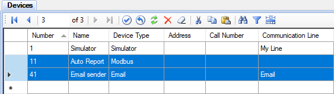
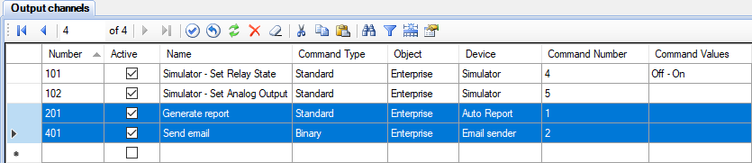
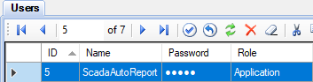
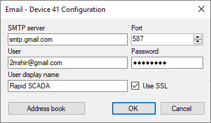
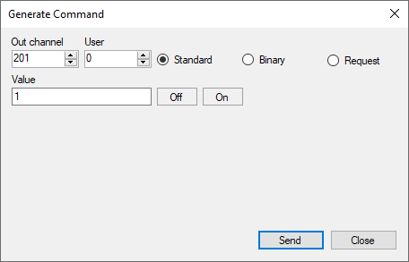

The Auto Report application is designed to automatically generate various reports, save them to disk and send by email. The schedule for generating reports is set using Automatic Control Module. Sending reports by email is provided by the corresponding KpEmail.dll driver, which is included in the standard Rapid SCADA installation.
The following types of reports are supported:
Auto Report works as a service. It connects to the Server application and is permanently ready to receive commands. Automatic Control Module, which operates as part of Server, sends commands to execute tasks for generating reports at specified time. Due to a command, a set of reports is generated and saved to disk in a format of office files or archive. If the corresponding option is set, the Auto Report application passes a command to Server to send the generated reports by email.
The configuration of Auto Report is stored in the file C:\SCADA\ScadaAutoReport\Config\ScadaAutoReportConfig.xml. To edit the configuration, the ScadaAutoReportConfig.exe application is intended. Its user interface is shown in the following figures:

To make Auto Report work, it is necessary to perform certain settings in the project:
Actions 1, 2, and 3 are shown in the following figures:




The settings of Automatic Control Module (item 4) are shown below:

An example of Communicator settings for sending emails (item 5) is contained in the DemoProject.en-GB.rsproj project. The following figure shows the device properties:

After completing the configuration or changing the existing configuration, restart the Auto Report service. To do this, run the file ScadaAutoReport\svc_restart.bat as administrator or use the Windows management console. The service name is ScadaAutoReportService.
To perform a check, run a task of generating report by the Administrator application. Open the Generator form and send a standard command, specifying the control channel that is responsible for generating reports. In this example, the output channel number is 201. Use the task ID as the command value. Then check the log files located in the directory C:\SCADA\ScadaAutoReport\Log\

If the application works well, generated reports are saved in the directory specified in the general options, by default C:\SCADA\Reports\